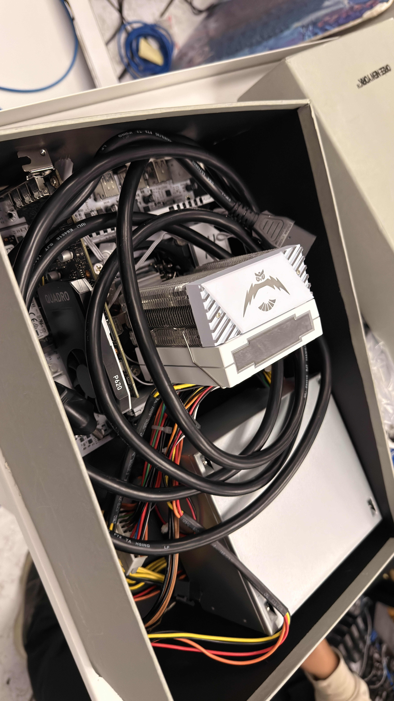

Overview
My homelab runs on a standalone Proxmox host and is designed as a practical environment for self-hosting, automation, network segmentation, and infrastructure-as-code learning. Terraform defines virtual-machine resources, while Ansible configures the operating systems and applications inside them.
Background
I started this homelab on September 1, 2026, repurposing my previous gaming PC that I had bought from a friend. It was funny because it used an Intel Xeon E5-2698 v3 processor which was designed for server workloads, which made the machine a great fit for the project. Moving from a single ThinkPad T14 to a 16-core, 32-thread host was a substantial upgrade and renewed my enthusiasm for homelabbing.
Pictured below is the lab’s first iteration, in a shoebox case because I was too excited to start on it. I had only kept it in there long enough to initially install Proxmox on it, and test Terraform-based provisioning. I had to take a picture because it made for such a memorable starting point.

The additional capacity, along with my prior homelab experience gave me room to design the environment deliberately: an addressing scheme, purpose-built virtual machines, and resource allocations that balance everyday services with game hosting. I began by using Terraform to describe the infrastructure I wanted to build, rather than treating each VM as a one-off manual setup.
Hardware
The lab runs on a repurposed gaming PC with an Intel Xeon E5-2698 v3: 16 cores and 32 threads, 32 GiB of memory, and a 1 TB NVMe SSD. It runs as a standalone Proxmox VE host, providing enough capacity for always-on management services, a development VM, and a resource-priority game server.
Virtual-machine roles
| Role | Purpose |
|---|---|
| Edge | Routes between zones, enforces policy, runs Caddy for web traffic, and forwards selected non-web services. |
| Ops | Runs Ansible and administration tools. |
| Gitea | Provides private source control and a web interface for repositories. |
| Monitoring | Collects metrics and logs for observability. |
| Nolife | An always-on, personalized Linux workspace for development and remote access. |
| Apps | Hosts Docker-based services such as Vaultwarden and custom applications. |
| Games | A dedicated, resource-priority host for modded Minecraft and future game servers. |
| k3s | An on-demand Kubernetes environment for learning and low-risk experiments. |
Network design
The environment separates management workloads from hosted services rather than placing every VM on the home LAN.
| Zone | Purpose |
|---|---|
| Access edge | The only public-facing entry point; handles routing, firewall policy, TLS, and web proxying. |
| Management network | Administration, automation, source control, monitoring, development, backups, and remote access. |
| Services network | Docker application hosts, websites, game servers, and other intentionally exposed workloads. |
The addressing scheme intentionally mirrors the VMID convention. Separate private network families identify the management and services zones: 1xxx is reserved for management-side VMs, while 2xxx is reserved for service-side VMs. The final three VMID digits match the host’s final IP octet, so a VMID ending in 020, for example, maps to host .20 in its assigned zone. This makes the inventory easier to scan and leaves groups of ten for related roles, such as operations, monitoring, Kubernetes, general applications, and game servers.
Service exposure
Web traffic reaches Caddy on the edge VM, which terminates TLS and proxies only approved services on the private services network. Private services use DNS-based certificate validation and remain reachable only through NetBird, while deliberately public services can use explicitly scoped forwarding through the same edge boundary. Administrative services are not exposed directly to the Internet.
Resource priorities
The development workspace and core management services remain available continuously. The game-server VM receives the largest dedicated memory allocation for a modded Minecraft server with a small group of players. Kubernetes is intentionally on-demand so game hosting has predictable resources when it matters.
Recovery and reproducibility
The design keeps configuration in version control and treats VMs as reproducible resources rather than irreplaceable machines. Important repositories and recovery material are kept outside the lab as well, so restoring the environment does not depend on a single internal service.